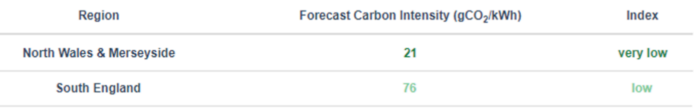
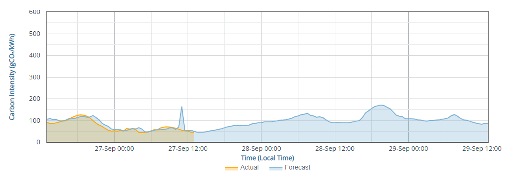
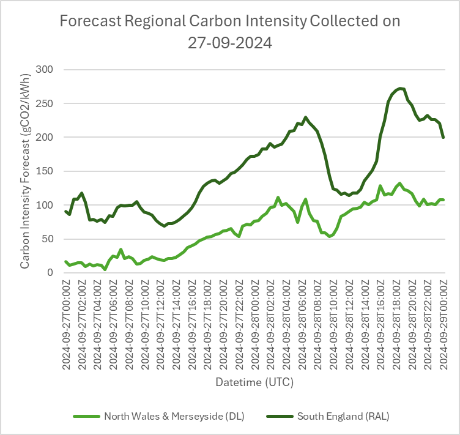
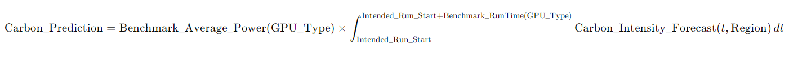
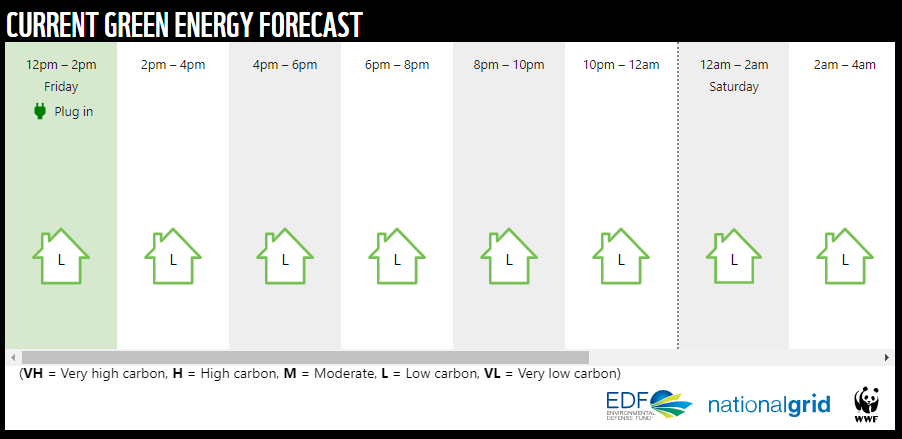

Future Work and Expansion¶
1 Additional Benchmarks to Integrate¶
-
McStas Neutron Monte Carlo Ray-Tracing
-
RFI GPU Benchmarks: Explore and integrate relevant Radio Frequency Interference (RFI) GPU benchmarks to cover a wider range of scientific performance evaluations.
-
Highly Optimized NVIDIA HPL Benchmarks: Add the NVIDIA HPC Benchmarks, focusing on the HPL benchmarks designed for Grace Hopper tests. This integration will require referencing the NVIDIA HPL Benchmark documentation to ensure proper implementation and optimization.
2 Enhancing Benchmark Results¶
-
Integration into Meerkat (HIGH PRIORITY): Complete the integration with Meerkat to facilitate regular benchmark testing. This will allow the generation of more robust statistical data, such as error bars, by calculating mean and standard deviation across multiple tests.
-
Normalization of Results: Implement normalization techniques to standardize benchmark results across different GPU models and workloads, facilitating meaningful comparisons.
-
FLOP Estimations and Efficiency Metrics: Calculate Floating Point Operations per Second (FLOPs) to determine performance per watt, providing insights into computational efficiency and energy consumption.
2.1 Estimating Floating Point Operations Per Second (FLOPs)¶
Comparisons based solely on clock speed can be misleading due to differences in GPU architectures, CUDA cores, tensor cores, and operations per clock cycle. Note clock speeds vary for various reasons such as size of workload, temperature, and power supply.
To estimate the FLOPs of a GPU:
FLOPs = CUDA Cores × Clock Speed (Hz) × Operations per Clock Cycle
Steps to calculate FLOPs:
- Determine the number and type of cores (e.g., CUDA cores, tensor cores) and if they are being utilized.
- Clock speed can be found using IRIS BENCH.
- Identify the operations per clock cycle, specific to the GPU's architecture (i.e., core generation). "The A100 SM includes new third-generation Tensor Cores that each perform 256 FP16/FP32 FMA operations per clock."
- Investigate how
nvidia-smicalculates utilization and whether more granular utilization data can be obtained. - Review how tools like sciml-bench and pytorch report core usage and incorporate these insights into metrics collection.
Data Sheets Contain Information About the Number of Cores
3 Explore NVIDIA Nsight Systems¶
Utilize NVIDIA Nsight Systems for detailed performance profiling, identifying optimization opportunities, and potentially getting insight into the activated cores for FLOP calculations. This tool offers in-depth insights into GPU performance across various workloads and configurations.
4 Enhancing Carbon Footprint Accuracy¶
To achieve a more accurate total carbon footprint, emissions from the GPU's manufacturing, delivery, and full lifecycle should be included. This requires calculating the proportion of the GPU's lifespan used by a specific workload and converting it to equivalent carbon emissions, which are then added to emissions from the API and electricity use.
Cooling power should also be considered; while nvidia-smi does not report fan power directly, fan speed data can be used to estimate it.
The revised calculation includes:
-
Manufacturing Emissions per Hour:
Manufacturing Emissions per Hour = Total Manufacturing Emissions (kg CO₂e) / Expected Lifespan (hours) -
Delivery Emissions per Hour:
Delivery Emissions per Hour = Total Delivery Emissions (kg CO₂e) / Expected Lifespan (hours) -
Use Emissions for the Run (already calculated by IRIS Bench):
Use Emissions for the Run = (Power Consumption (Watts) / 1000) * Run Time (hours) * Carbon Intensity from API (kg CO₂e per kWh) -
Cooling Emissions for the Run (based on fan speed):
Cooling Emissions for the Run = (Estimated Fan Power (Watts) / 1000) * Run Time (hours) * Carbon Intensity from API (kg CO₂e per kWh) -
Total Emissions for the Run:
Total Emissions for the Run = (Manufacturing Emissions per Hour + Delivery Emissions per Hour) * Run Time (hours) + Use Emissions for the Run + Cooling Emissions for the Run
This approach will provide a more comprehensive estimate of the carbon footprint for GPU workloads.
4.1 Estimating Embodied Carbon if Manufacturers Don’t Provide Them¶
Finding specific statistics on the embodied carbon emissions associated with the manufacturing and packaging of NVIDIA GPUs proved challenging. However, the paper Toward Sustainable HPC: Carbon Footprint Estimation and Environmental Implications of HPC Systems provides a model for estimating embodied carbon using available data on GPUs (as well as CPU, Memory, and Storage). For detailed insights, please refer to Section 2.1, titled "Embodied Carbon Footprint Modeling."
5 Strategic Planning for Energy-Intensive Tasks Based on Carbon Intensity Forecasts¶
5.1 Overview¶
This section focuses on guiding policies for executing energy-intensive tasks at STFC. By utilizing carbon intensity forecasts from the National Grid ESO Carbon Intensity API Carbon Intensity API, users can determine the optimal timing for these operations.
Scheduling tasks during periods of low carbon intensity or in regions with lower emissions—such as comparing Daresbury and RAL—can effectively reduce users' carbon footprints. Factors such as seasonal variations (summer vs. winter) and time of day significantly impact carbon intensity. Making informed decisions based on these variables can lead to substantial reductions in carbon emissions.
5.3 Regional Carbon Intensity Variation¶
The table below, sourced from Carbon Intensity API, illustrates the variation in carbon intensity across different regions. At the time this screenshot was captured, the carbon intensity for the Daresbury Lab region was 21 gCO2/kWh, while RAL's region recorded 76 gCO2/kWh. Running a program at the Hartree Centre instead of RAL during this period could potentially reduce carbon emissions by approximately 70%, assuming the same hardware and setup are available.

5.4 Emissions Forecasting¶
As shown in the plot below from Carbon Intensity API, actual emissions closely align with forecasted values. Running an energy-intensive task between September 27 at 00:00 and 12:00, rather than from September 28 at 00:00 to 12:00, could result in an approximately 50% reduction in carbon usage.

5.5 Integration with IRIS Bench¶
Connecting this back to benchmarks—IRIS Bench provides users with insights into the duration and energy consumption of workloads similar to theirs on available GPUs. When combined with carbon intensity forecasts gathered regionally before the intended execution time, users can estimate carbon emissions for a workload before it is run. This predictive capability would be a valuable addition to IRIS Bench, allowing users to make informed decisions about the environmental impact of their tasks prior to execution.
The example below, taken from the Carbon Intensity API on 27-09-2024, provides a carbon forecast through 29-09-2024 and demonstrates the ability to select specific regions for tailored predictions.

Formula for Predicting Carbon Emissions¶

Carbon_Prediction: Estimated total carbon emissions (gCO2) of the task.
-
Benchmark_Average_Power(GPU_Type): Average power consumption of the workload from IRIS Bench Results Database for a specific GPU type (W).
-
Intended_Run_Start: Planned start time for the task (timestamp).
-
Benchmark_RunTime(GPU_Type): Estimated duration of the task from IRIS Bench Results Database for a specific GPU type (hours).
-
Carbon_Intensity_Forecast(t, Region): Forecasted carbon intensity at time t in a specific region (gCO2/kWh).
-
t: Variable of integration representing time.
-
Region: Geographical area of execution affecting carbon intensity.
-
GPU_Type: The specific model of GPU utilized for the task. The calculation can be repeated for each available GPU to provide a comprehensive summary.
5.6 An Example from WWF¶
WWF has integrated the API into a reusable widget designed to help reduce emissions by turning on devices during periods of green energy and off when it's not. STFC Cloud could create a similar solution for its users to enhance carbon emission management.
 Screen print from WWF
6 Additional Metrics and Areas for Measurement in IRIS Bench¶
-
Utilization Time: Measure the total time the GPU is actively utilized, which can provide insights into idle periods and workload efficiency.
-
Stability: Crash Frequency: Track and report any GPU crashes or visual artifacts during benchmarks to assess stability.
-
Throttling Events: Monitor instances of clock speed reductions due to high temperatures or power constraints.
-
Memory Bandwidth: Measure the data transfer rate between the GPU and system memory to identify potential bottlenecks and optimize performance.
7 Other Ideas for Future Implementation¶
-
Consistent Hardware Configurations: Ensure that all GPUs being tested use the same hardware configurations (e.g., memory, CPUs) to eliminate variability and produce consistent results.
-
Continuous Integration for Performance Testing: Encourage IRIS users to integrate GPU benchmarks into their CI workflows. Implement automated performance tests on every pull request; if performance drops by a specified percentage, the pull request would fail, ensuring that code changes do not degrade performance.
-
Experimenting with Precision to Utilize Tensor Cores Fully: For GPUs equipped with tensor cores, utilize lower precisions (e.g., FP16) for matrix
operations where feasible. This can lead to significant performance gains, depending on the workload's precision requirements.
8 Improvements for GitHub Repository¶
- Continuous Integration (CI) Tests: Develop and integrate comprehensive CI tests using GitHub Actions to maintain code reliability, ensure consistent performance, and catch issues early in the development cycle.
- Carbon Index Calculation: Enhance the environmental impact analysis by calculating the carbon index throughout the entire benchmarking run, rather than just at the start and end, to provide a more accurate representation.
- Wider Carbon Cost View: * It would be good to also investigate carbon associated with the manufacturing, delivery and lifetime of the GPU to. Ie how much of the lifetime was consumed by the run and how does that equate to carbon emissions.
- Use Best Practices for Naming Dockerfiles: Ensure all Dockerfiles follow standard naming conventions for clarity and maintainability.
- Include Logging Levels: Implement various logging levels (e.g., debug, info, error) and log tagging to improve traceability and debugging.
- Add Shell Check Workflow: Integrate a shell check workflow, similar to the one used in the SCD-OpenStack-Utils repository, to catch errors in shell scripts.
- Run Shell Check from Bash Scripts: Use shell check (similar to pylint) to analyze bash scripts for potential issues and maintain code quality.
- Add Dependabot to GitHub Actions: Implement Dependabot for automated dependency updates, improving security and ensuring compatibility with new releases.